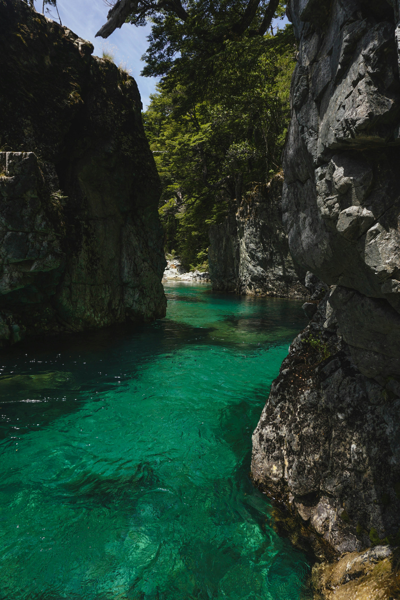

.png)
RECORRE LA PATAGONIA CON NOSOTROS
01
Día 1: Llegada a El Calafate
- Llegada a El Calafate.
- Traslado al hotel.
- Resto del día libre para explorar la ciudad.
Día 2: Glaciar Perito Moreno
- Excursión de día completo al Glaciar Perito Moreno.
- Navegación por el Lago Argentino para ver el glaciar desde cerca.
- Regreso al hotel en El Calafate.

02
Día 3: Viaje al chalten
- Traslado desde El Calafate a El Chalten.
- Check-in en el hotel del Chalten.
- Tarde libre para explorar el pueblo y sus alrededores.
Día 4: Trekking en El Chalten
- Día completo de trekking al Mirador de los Cóndores y Las Águilas.
- Visita a la Laguna Capri.
- Regreso al hotel en El Chaltén.
Día 5: Trekking a Laguna de los Tres
- Día completo de trekking a Laguna de los Tres, con vistas espectaculares del Monte Fitz Roy.
- Regreso al hotel en El Chaltén.

03
Día 6: Traslado a El Bolsón
- Viaje desde El Chaltén a El Bolsón
- Check-in en el hotel en El Bolsón.
- Resto del día libre para explorar la ciudad.
Día 7: Visita a la Feria Artesanal de El Bolsón
- Mañana libre para visitar la Feria Artesanal de El Bolsón.
- Tarde libre para explorar los alrededores o realizar alguna actividad opcional como rafting o visitas a cervecerías artesanales.
Día 8: Excursión a Lago Puelo
- Día completo de excursión al Parque Nacional Lago Puelo.
- Caminatas por los senderos del parque y tiempo para disfrutar.

04
Día 9: Traslado a Villa La Angostura
- Viaje desde El Bolsón a Villa La Angostura
- Check-in en el hotel en Villa La Angostura.
- Tarde libre para explorar el centro de la ciudad.
Día 10: Parque Nacional Los Arrayanes
- Excursión de día completo al Parque Nacional Los Arrayanes.
Día 11: Día libre en Villa La Angostura
- Día libre para disfrutar de actividades
- Cena de despedida en un restaurante local.
Día 12: Vuelo de salida
- Vuelo de salida desde El Bolson